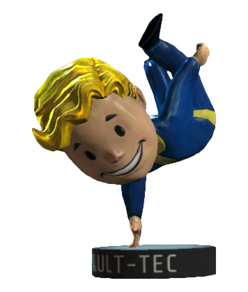
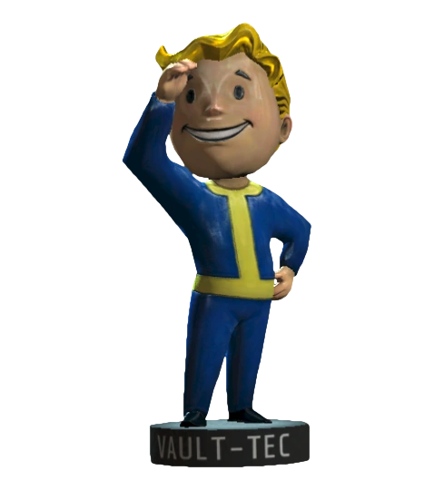

Hbitost

Vnímání

Rychlost
Vylepši své schopnosti na maximum
Po celé pustině je rozmístěno 20 bambulek, které vylepší tvoje schopnosti, nebo získáš perfektní bonusy pro svoji postavu.
Pro rychlé a pohodlné získání všech dvaceti bambulek jsem vytvořil mapu s polohou všch bambulek
Koukni se do mapy na scházející bambulky a vydej se do pustiny pro zbývající bambulky, ty které už si získal si můžeš odškrtnout na seznamu vedle mapy.